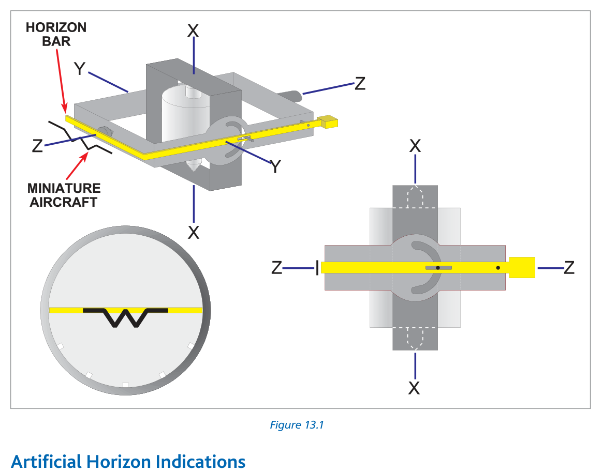
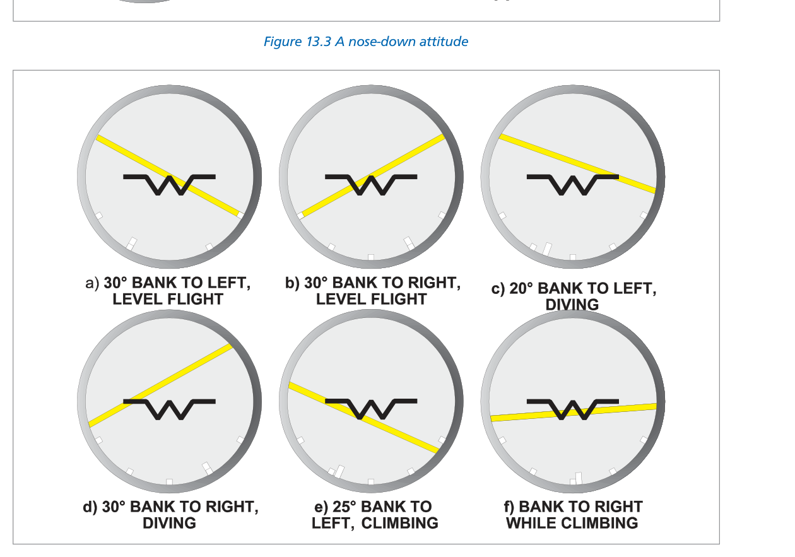
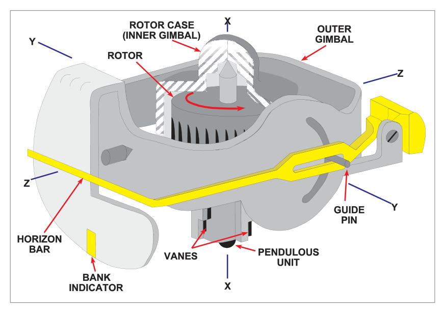
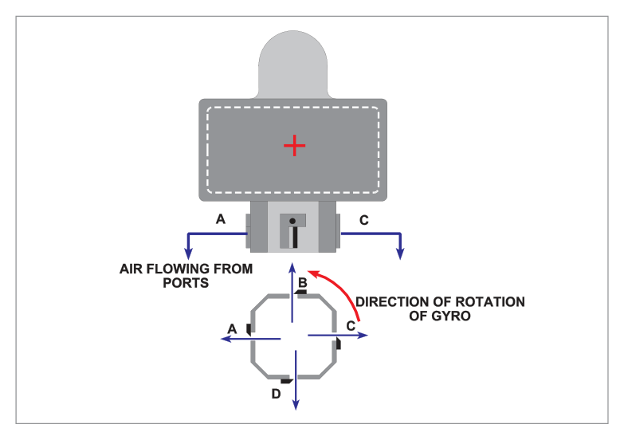
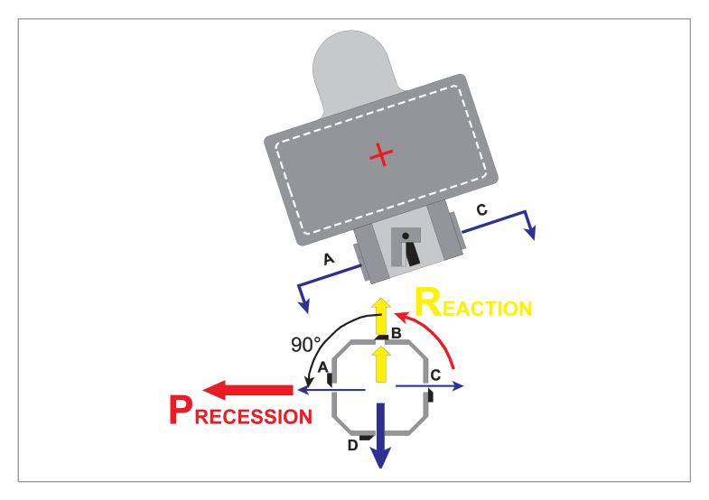
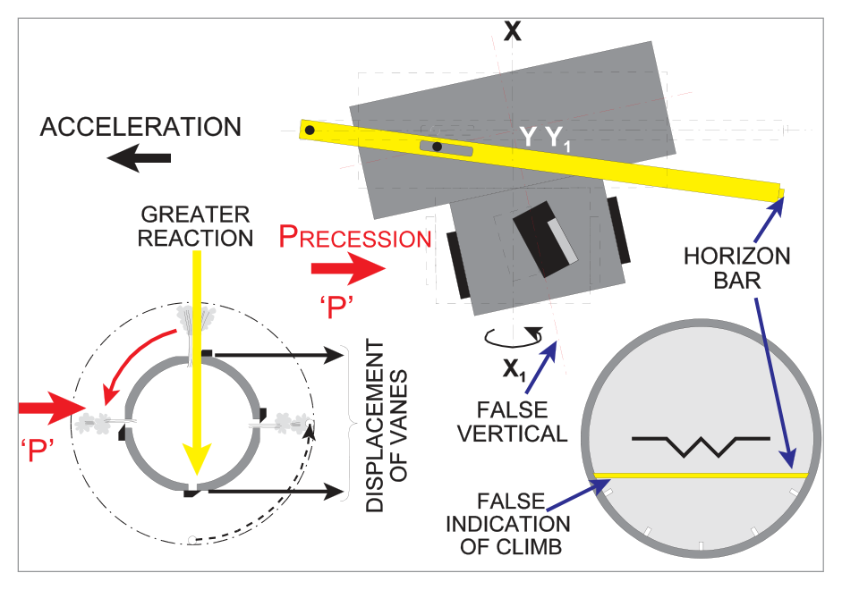
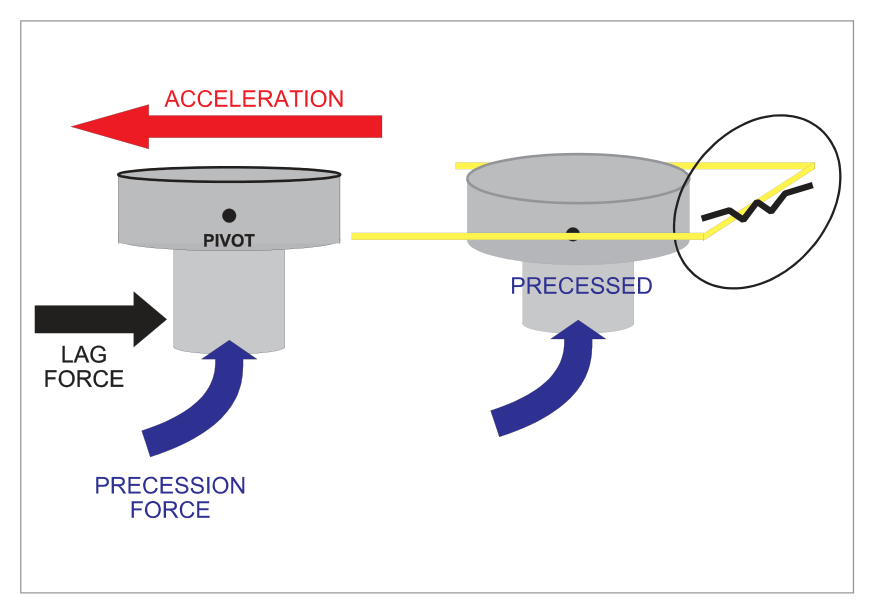
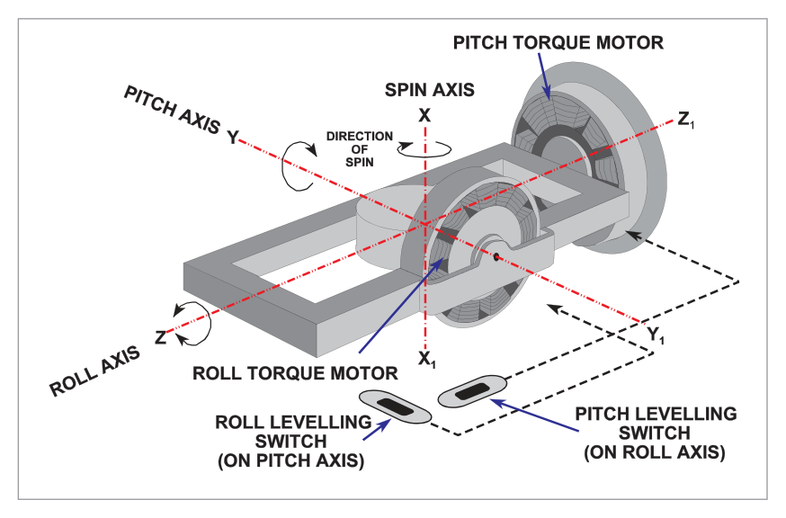

What this section covers: Purpose of the artificial horizon, what it displays, and alternative names.
The Artificial Horizon (AH), also called the gyro horizon or attitude indicator, provides the pilot with information about the aircraft's attitude in both pitch and roll. It is a primary instrument, replacing the natural horizon in poor visibility (IMC).
The attitude display consists of a miniature aircraft shape or 'gull-wing' (tail view) fixed to the instrument case (and thus to the actual aircraft), behind which is a gyro-stabilized horizon bar that remains parallel to the true horizon.
2. Construction
What this section covers: The type of gyro used and its axis orientation.
The artificial horizon uses an earth gyro in which the spin axis is maintained in, or tied to, the vertical by earth's gravity. The plane of rotor rotation is therefore horizontal, providing stable lateral and longitudinal references.

Fig 13.1 — Artificial horizon showing three gyro axes XX (spin/vertical), YY (lateral/horizontal), ZZ (longitudinal). Source p.170
3. Artificial Horizon Indications
What this section covers: How pitch and roll are displayed; gimbal arrangement.
Pitch
In Figure 13.1 the level-flight attitude is shown. In a nose-up attitude (Figure 13.2), the pitch-up movement rotates the case together with the attached outer gimbal ring about the lateral axis YY. A guide pin from the stabilized inner gimbal forces the horizon bar arm down. The horizon bar is now below the gull-wing → nose-up indication.
As the aircraft rolls about the longitudinal axis (ZZ), the instrument case and gull-wing rotate about the stabilized gyro rotor/gimbal system. Gyroscopic rigidity holds the horizon bar in the rolling plane, displaying the amount and direction of bank of the gull-wing relative to the horizon bar. A pointer attached to the outer gimbal shows bank angle on a scale on the instrument face.

Fig 13.4 — Various artificial horizon displays showing different aircraft attitudes. Source p.172
4. Limitations
LIMITATIONS — Toppling:
Instrument Type
Pitch Limit
Roll Limit
Older designs
±60°
±110°
Modern instruments
±85°
360° (complete freedom)
If limits are exceeded, the gyro topples, giving violent and erratic movements of the horizon bar. Without a fast erection system, accurate indications will not be obtained until the gyro re-erects itself over a period of 10 to 15 minutes.
5. Control Systems Overview
What this section covers: The two main types of erection system and how they maintain the rotor axis vertical.
The rotor assembly is made very slightly bottom-heavy to keep down the time for initial erection when first started up. The erection system then maintains the rotor axis vertical in flight.
AH Type
Erection Method
Rotor Speed
Air Driven (Suction)
Four pendulous vanes + four slots
Up to 15,000 rpm
Electric
Mercury/levelling switches + torque motors
Typically 22,500 rpm
6. The Air Driven Artificial Horizon
What this section covers: Suction system, pendulous vanes operation, and how erection is achieved.
An engine-driven suction pump (or venturi tube in some light aircraft) creates a suction of about 4 inches of mercury in the instrument case. Replacement air drawn in via a filter is ducted through the outer and inner gimbals to enter the rotor case as a jet which spins the rotor at up to 15,000 rpm.
Control System — Pendulous Vanes
Four slots and four pendulous (hanging) vanes are at the base of the rotor housing. When the rotor axis is vertical, each slot is half covered by its vane, producing four equal jets fore, aft, left and right. Equal and opposite jets produce no net force → no precession → rotor remains vertical.

Fig 13.6 — Equilibrium: four equal jets, no net force on gyro. Source p.173
The opposing vanes are fixed to a common spindle operating as two pairs. If the rotor axis wanders from the vertical, one vane hangs clear of its slot (fully open) while the opposite slot is completely obstructed. The resulting unbalanced airflow jet produces a reaction that is precessed through 90° in the direction of rotor spin, correcting the tilt and returning the gyro axis to the vertical.

Fig 13.7 — Rotor axis displaced: vane D open, vane B closed. Reaction R precessed to P restoring vertical. Source p.174

Fig 13.5 — The air driven artificial horizon (detailed construction). Source p.173
7. Acceleration Errors — Air Driven AH
What this section covers: Pitch and roll errors caused by linear acceleration (take-off run) and their direction.
The control system depends on gravity acting on the pendulous vanes. Any acceleration (not just gravity) will affect the vanes, causing false indications.
ACCELERATION ERROR (linear — take-off run): A false nose-up, right wing down (climbing right hand turn) indication results when the aircraft accelerates in a level attitude.
Pitch Error During Acceleration
During acceleration, the lateral vanes lag (swing back towards the pilot), opening the starboard slot and closing the port slot. The resulting reaction R acts to port. By the rule of precession, this is precessed 90° in the direction of rotor spin (anticlockwise when viewed from above), causing the gyro base to move backwards. The horizon bar drops below the gull-wing → false nose-up indication.

Fig 13.8 — Pitch error due to acceleration: false nose-up indication. Source p.175
Roll Error During Acceleration
Due to inertia, the weighted (bottom-heavy) base of the rotor housing tries to lag during acceleration. This force is precessed, resulting in the base of the rotor housing moving to starboard and the gyro axis precessing out of vertical → false right wing down indication.

Fig 13.9 — Roll error due to acceleration: false right wing down indication. Source p.176
Key Rule for Acceleration Errors:
Acceleration → false nose-UP, right wing DOWN (British/anticlockwise rotor).
Deceleration → opposite: false nose-DOWN, left wing LOW.
American air-driven / most electric horizons rotate clockwise → give opposite errors.
8. Turning Errors — Air Driven AH
What this section covers: How centripetal acceleration during turns causes pitch and roll errors; compensation.
During turns, centripetal acceleration acts on the pendulous vanes (erection error) and the weighted base of the rotor housing (pendulosity error). The errors are complex and change as the turn progresses, cancelling out after a 360° turn.
Compensation is applied by tilting the top of the rotor axis slightly forward (for erection error) and slightly to the left (for pendulosity error) — tilts of the order of 2°. The horizon bar setting is similarly modified.
9. Rigidity and Serviceability Checks
What this section covers: Rotor speeds, rigidity, and pre-flight serviceability checks.
AH Type
Rotor Speed
Gyroscopic Inertia
Suction AH
Up to 15,000 rpm
High
Electric AH
Typically 22,500 rpm
Even greater
Before Flight Serviceability Checks:
Check that the horizon bar takes up a laterally level position with the correct pitch indication for the aircraft type.
Confirm indication is maintained when taxiing.
If a caging device is fitted, uncage at least 5 minutes before take-off to ensure the rotor axis has reached alignment with the true vertical.
In Flight: The artificial horizon should give an immediate and correct indication of any change in pitch or roll attitude.
10. The Electric Artificial Horizon
What this section covers: Advantages of the electric AH over the air-driven type.
The main advantage of the electric artificial horizon is its greater rigidity due to its faster spin rate (22,500 rpm typical vs. 15,000 rpm for suction). This results in increased accuracy due to reduced errors. The basic principle (earth gyro, tied to vertical) is the same as the air-driven horizon.
The vertical gyro is tied to the vertical by mercury / levelling switches and torque motors rather than the pendulous vanes of the air-driven horizon.
11. Electric AH Control System
What this section covers: Mercury/levelling switch operation; torque motor placement for pitch and roll correction.
The gravity-operated control system uses mercury / levelling switches fixed to the base of the rotor and electric torque motors. If a levelling switch is not level, the mercury liquid ball moves from its central position and closes the circuit to drive its torque motor. The torque motor force is precessed to return the gyro axis to the vertical.
There are two levelling switches — one sensing pitch, one sensing roll — activating their respective torque motors.

Fig 13.10 — The electric horizon control system (mercury switches + torque motors). Source p.178
Due to the 90° precession rule:
Torque motor on the side of the inner gimbal corrects wander in the rolling plane.
Torque motor on the outer (longitudinal) gimbal corrects wander in the pitch plane.
Exam Tip: The torque motor is on the perpendicular axis to the correction needed — because gyroscopic precession shifts the effect 90° from the applied force.
12. Acceleration Errors — Electric AH
What this section covers: Why electric AHs have minimal acceleration errors; pitch and roll cut-out switches.
Why Electric AH Has Minimal Acceleration Errors:
High rotor speed → very high gyro rigidity → very low precession rates → less tendency for gyro to move out of vertical.
Less bottom-heavy rotor housing → reduced roll error during acceleration.
Pitch cut-out switch: Activates at acceleration of 0.18g or greater — disconnects the pitch levelling switch circuit to prevent false precession.
Roll cut-out switch: Activates at 10° angle of bank — prevents the roll mercury switch from falsely activating the roll torque motor during turns.
13. Fast Erection System
What this section covers: How fast erection works, typical erection rates, and when it can/cannot be used.
Many electric horizons include a fast erect system for rapid initial erection and quick re-erection after toppling. The fast erection knob increases voltage to the erection torque motors:
Mode
Erection Rate
Normal
4° per minute
Fast erect (knob pushed)
120° per minute
CAUTION — Fast Erection: When airborne, the fast erection knob can only be used successfully in level flight with no acceleration. During acceleration or a turn, the liquid level switches would be 'off-centre', and operation of the fast erection system would align the rotor axis with a false vertical.
Benefit of Fast Erection: The pendulosity (bottom-heaviness) of the gyro can be reduced, decreasing turning and acceleration errors.
14. Adjustable Aeroplane Datum
What this section covers: The adjustable datum refinement, its use limitations, and EASA requirements.
Found on some American artificial horizons, this refinement allows the 'aeroplane' datum to be adjusted to lie on the horizon if the aircraft has a pitch-up trimmed attitude in level flight.
EASA REQUIREMENT: EASA requires that movable datums be removed or otherwise rendered inoperative on aircraft having a maximum all-up weight in excess of 6,000 pounds (2,727 kg). (Reference: AIC 14/1969.) In light aircraft, the datum should be set before flight and left alone — adjusting it in flight during IMC could result in a misleading datum.
15. Vertical Gyro Unit
What this section covers: The remote vertical gyro unit and its role in FMS/EFIS.
The Vertical Gyro Unit (VGU), also called the remote vertical gyro or vertically axised data generation unit, performs the same function as the gyro horizon — it establishes a stabilized reference about the pitch and roll axes. However, instead of providing attitude displays directly to a dial, it operates an electrical transmission system to a steering computer, which displays the output on a combined attitude indicator and flight director display.
Q1.An artificial horizon utilizes (i)............ to show (ii)........ in (iii)....... and (iv).............
(i) an earth gyro — (ii) position — (iii) latitude — (iv) longitude
(i) a space gyro — (ii) attitude — (iii) degrees — (iv) minutes
(i) an earth gyro — (ii) latitude — (iii) pitch — (iv) roll
(i) an earth gyro — (ii) attitude — (iii) pitch — (iv) roll
Correct Answer: (d) an earth gyro — attitude — pitch — roll
Explanation: The AH uses an earth gyro (spin axis tied to the earth's vertical by gravity). It shows attitude (not position or latitude) in both pitch and roll. See Section 1 and Section 2.
Why the other options are wrong:
(a) — "Position," "latitude," and "longitude" describe a navigation instrument, not an attitude indicator.
(b) — A "space gyro" is a free gyro fixed in space — the AH uses an earth gyro tied to the vertical by gravity.
(c) — Correct gyro type but "latitude" is wrong; it shows attitude in pitch and roll.
Instructor's Note: "Earth gyro" = spin axis tied to earth's vertical by gravity. "Space gyro" = spin axis fixed relative to inertial space. The AH is an earth gyro.
Q2.During the take-off run an air driven artificial horizon will usually indicate:
nose up and incorrect left bank
a false descending turn to the right
increased nose-up attitude and right wing low
a false climbing turn to the left
Correct Answer: (c) increased nose-up attitude and right wing low
Explanation: During the take-off run (linear acceleration), a British air-driven AH (anticlockwise rotor spin) shows a false nose-UP and right wing DOWN indication. Pitch error: lateral vanes lag → port slot opens → reaction precessed → nose-up. Roll error: bottom-heavy rotor housing lags → precessed → base moves starboard → right wing down. See Section 7.
Why the other options are wrong:
(a) — "Left bank" is incorrect; acceleration gives right wing down (starboard bank) error.
(b) — "Descending" and "to the right" are both wrong; the indication is climbing (nose up) and right wing down, but not a turn.
(d) — "Left" is incorrect; the bank error is to the right.
Instructor's Note: The question specifies "air driven" and implies British-style (anticlockwise rotor). The mnemonics: "ACCELERATION = Nose-Up + Right-Wing-Down."
Q3.The indication on the right shows: [image shows 30° bank to port, horizon bar above gull-wing]
a climbing turn to the right
nose up and left wing down
30° starboard bank, nose up
30° port bank, nose below horizon
Correct Answer: (d) 30° port bank, nose below horizon
Explanation: On an AH display, when the gull-wing (aircraft symbol) tilts to the right relative to the horizon bar, the aircraft is banked to port (left). When the horizon bar is above the gull-wing (nose), the aircraft is nose-down. See Section 3.
Why the other options are wrong:
(a) — "Climbing" and "right" — pitch and bank are both opposite.
(b) — "Left wing down" would mean starboard bank; the display shows port bank.
(c) — "Starboard" is incorrect; gull-wing tilts right = port bank.
Instructor's Note: Remember — on the AH, the gull-wing follows the aircraft. If the left wing appears lower (gull-wing left side down), the aircraft's left wing is down = port bank.
Q4.False nose-up attitude displayed on air driven artificial horizon during the take-off run is caused by:
the high pendulosity of the rotor
the lag of the lateral pendulous vanes
the linear acceleration cut-out
incorrect rotor speed
Correct Answer: (b) the lag of the lateral pendulous vanes
Explanation: During acceleration, the lateral pendulous vanes lag backwards (due to inertia). This uncovers the starboard slot and covers the port slot, creating an unbalanced reaction that is precessed to produce a false nose-up indication. See Section 7.
Why the other options are wrong:
(a) — High pendulosity of the rotor housing causes the roll error (right wing down), not the pitch error.
(c) — The linear acceleration cut-out is a feature of the electric AH, not the air-driven type, and it would reduce errors, not cause them.
(d) — Incorrect rotor speed affects rigidity and precession rate but is not the cause of the specific acceleration pitch error.
Instructor's Note: Pitch error = lateral vanes lag. Roll error = pendulous (bottom-heavy) rotor housing lags. Two distinct mechanisms for two distinct errors.
Q5.The rotor axis of an electrical horizon is tied to the earth's vertical by:
four pendulous vanes
the roll cut-out
the low centre of gravity of the rotor housing
two mercury level switches and two torque motors
Correct Answer: (d) two mercury level switches and two torque motors
Explanation: The electric AH uses mercury / levelling switches (one for pitch, one for roll) and torque motors to tie the rotor axis to the earth's vertical. See Section 11.
Why the other options are wrong:
(a) — Four pendulous vanes are the erection method of the air-driven AH, not the electric.
(b) — The roll cut-out is a safety feature to prevent false erection during turns, not the erection system itself.
(c) — The low centre of gravity (bottom-heaviness) assists initial erection but is not the erection control system.
Instructor's Note: Air-driven = pendulous vanes. Electric = mercury switches + torque motors. A clean distinction that is frequently tested.
Q6.False right wing low attitude shown on an air driven artificial horizon during an acceleration is caused by:
the lag of the base of the rotor housing
the longitudinal pendulous vanes
the roll cut-out
high rotor speed
Correct Answer: (a) the lag of the base of the rotor housing
Explanation: The rotor housing is bottom-heavy (pendulous). During acceleration, inertia causes the weighted base to try to lag behind. This force is precessed (90° in direction of rotor spin), moving the base to starboard → gyro axis tilts → right wing down indication. See Section 7.
Why the other options are wrong:
(b) — The longitudinal pendulous vanes cause the pitch error (nose-up), not the roll error.
(c) — The roll cut-out is an electric AH feature and reduces (not causes) errors.
(d) — High rotor speed increases rigidity and reduces errors; it does not cause roll error.
Instructor's Note: Pitch error (Q4) = lateral vanes. Roll error (this Q) = heavy base of rotor housing. Learn to distinguish the two mechanisms.
Q7.Inside an artificial horizon:
the inner gimbal ring is pivoted laterally inside the outer gimbal ring and the outer gimbal ring is pivoted longitudinally inside the case
the inner gimbal ring is tied to the vertical by a control system
the rotor axis is kept level by a calibrated spring attached to the outer gimbal ring and the instrument case
there is only one gimbal ring
Correct Answer: (a) inner gimbal ring pivoted laterally inside outer gimbal ring; outer gimbal ring pivoted longitudinally inside the case
Explanation: This describes the correct gimbal arrangement for the AH. The inner gimbal pivots laterally (about the lateral/pitch axis YY), the outer gimbal pivots longitudinally (about the longitudinal/roll axis ZZ inside the case). See Section 3.
Why the other options are wrong:
(b) — It is the rotor axis (via gimbals) that is tied to the vertical by the control system, not the inner gimbal ring directly.
(c) — Springs are used in the rate gyro (turn indicator), not the AH erection system.
(d) — The AH has two gimbal rings (inner and outer), not one.
Instructor's Note: In the AH, the gimbal arrangement allows complete freedom in pitch and roll. The rotor axis stays vertical while the instrument case (attached to aircraft) moves around it.
Q8.When an adjustable aircraft datum is fitted to an artificial horizon in light aircraft:
it should be checked at regular intervals
it should be set to the central position and left there
it should be rendered inoperative
it should be set to 15°
Correct Answer: (b) it should be set to the central position and left there
Explanation: In light aircraft, AIC 14/1969 strongly recommends that the datum be set before flight and thereafter left alone. For aircraft over 6,000 lb MTOW, EASA requires it be rendered inoperative. Note: option (c) applies to heavier aircraft. See Section 14.
Why the other options are wrong:
(a) — Regular in-flight checking/adjusting is the risk — it should be set before flight and not touched again.
(c) — This applies to aircraft over 6,000 lb MTOW (EASA requirement), not to light aircraft specifically. The question specifies light aircraft.
(d) — 15° has no relevance to the datum setting procedure.
Instructor's Note: The question specifically says "light aircraft." For heavy aircraft (>6,000 lb), render inoperative. For light aircraft — set before flight, leave it alone.
Q9.An electrically driven artificial horizon has less errors during the take-off run because:
it is less pendulous, has a higher rotor speed and a linear acceleration cut-out
the mercury level switches are more sensitive than the pendulous vanes fitted to air driven types
the roll cut-out speed is activated
it is less aperiodic than the air driven types
Correct Answer: (a) it is less pendulous, has a higher rotor speed, and a linear acceleration cut-out
Explanation: Three factors reduce acceleration errors in the electric AH: (1) less bottom-heaviness (less pendulous rotor housing) reduces roll error; (2) higher rotor speed increases rigidity reducing all precession; (3) linear acceleration (pitch) cut-out at 0.18g prevents false erection. See Section 12.
Why the other options are wrong:
(b) — Greater sensitivity of mercury switches would worsen acceleration errors, not reduce them. The cut-outs are needed specifically because the switches can be too sensitive.
(c) — The roll cut-out activates at 10° bank (during turns), not during the take-off run (linear acceleration).
(d) — "Aperiodicity" is a compass term (damping ratio). Not applicable here.
Instructor's Note: All three factors in (a) work together. The cut-out prevents false erection; less pendulosity reduces the mechanical cause of roll error; higher speed reduces the effect of any residual error.
Master Reference Tables
Parameter
Air-Driven AH
Electric AH
Erection method
4 pendulous vanes + slots
Mercury switches + torque motors
Rotor speed
Up to 15,000 rpm
≈ 22,500 rpm
Pitch limit (older)
±60°
±85° (modern)
Roll limit (older)
±110°
360° (modern)
Pitch cut-out
None
0.18g
Roll cut-out
None
10° bank
Normal erection rate
Slow
4°/min
Fast erection rate
N/A (cage)
120°/min
Re-erection time (no fast)
10–15 min
10–15 min
Suction (air-driven)
≈4 inHg
N/A
Acceleration Error Summary
Event
British Air-Driven (CCW rotor)
American/Electric (CW rotor)
Acceleration (take-off)
Nose-UP + Right wing DOWN
Nose-UP + Left wing DOWN
Deceleration
Nose-DOWN + Left wing LOW
Nose-DOWN + Right wing LOW
Answer Key Summary
Q
Answer
Key Topic
1
d
Earth gyro; shows attitude in pitch and roll
2
c
Acceleration → nose-up + right wing down
3
d
30° port bank, nose below horizon
4
b
Pitch error = lag of lateral pendulous vanes
5
d
Electric: 2 mercury switches + 2 torque motors
6
a
Roll error = lag of bottom-heavy rotor housing base